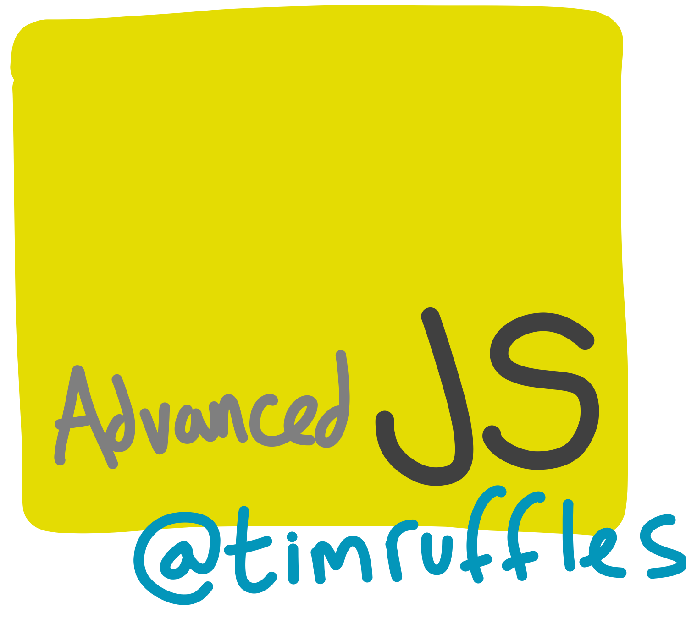
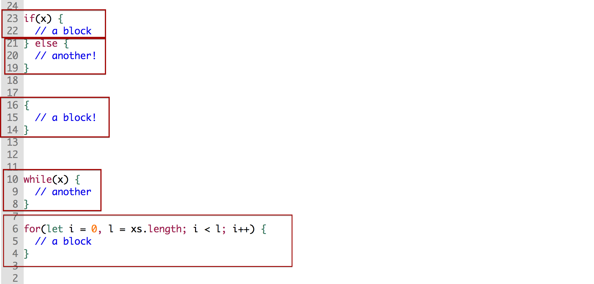
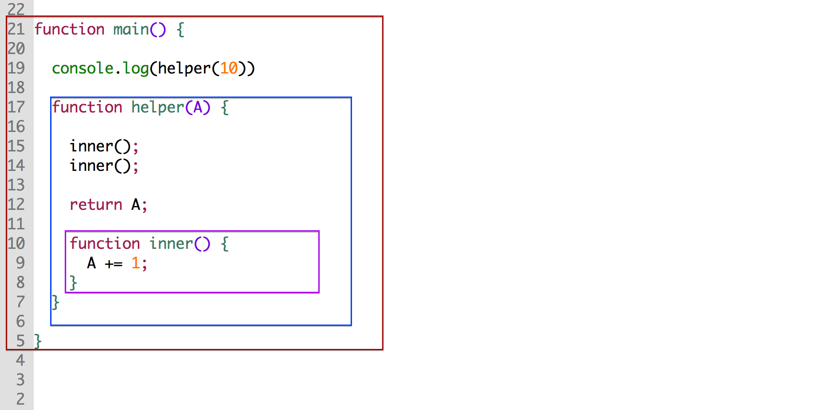
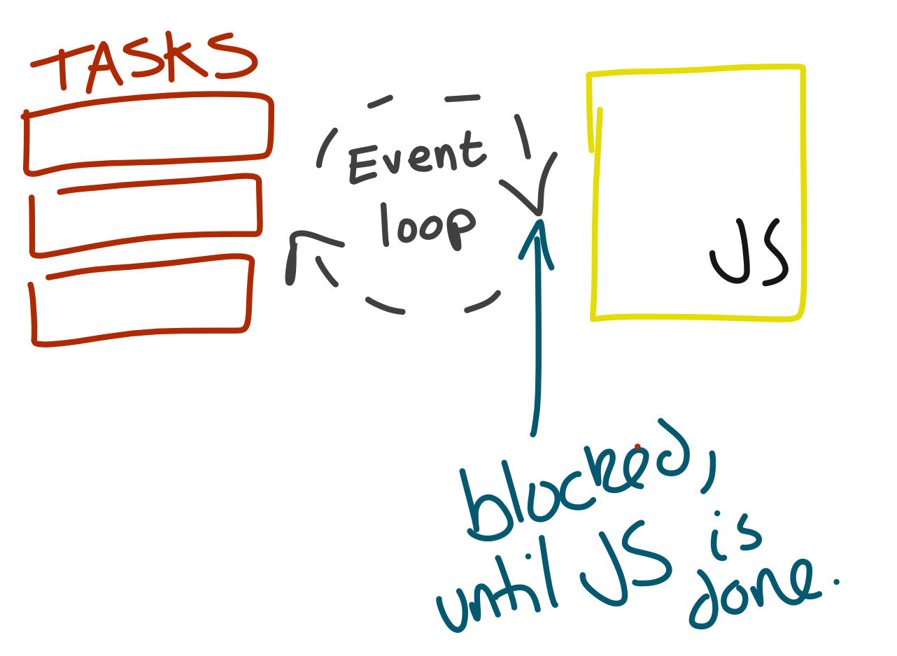
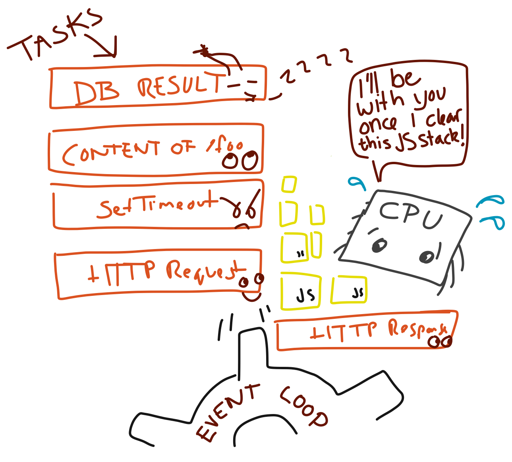
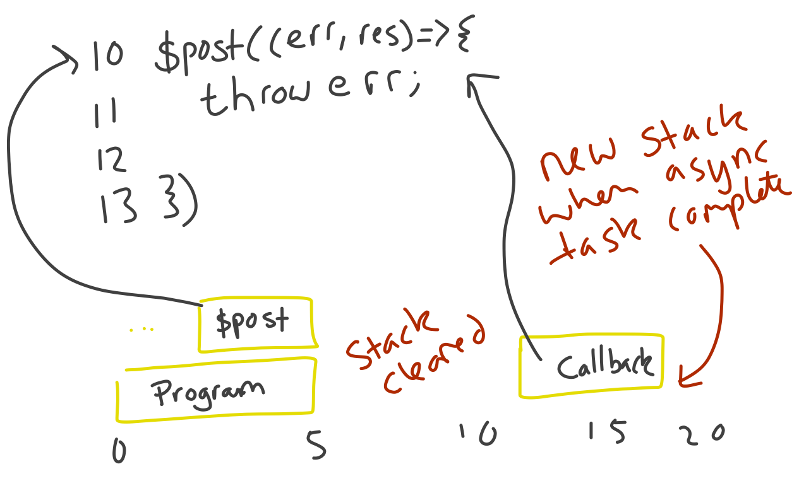
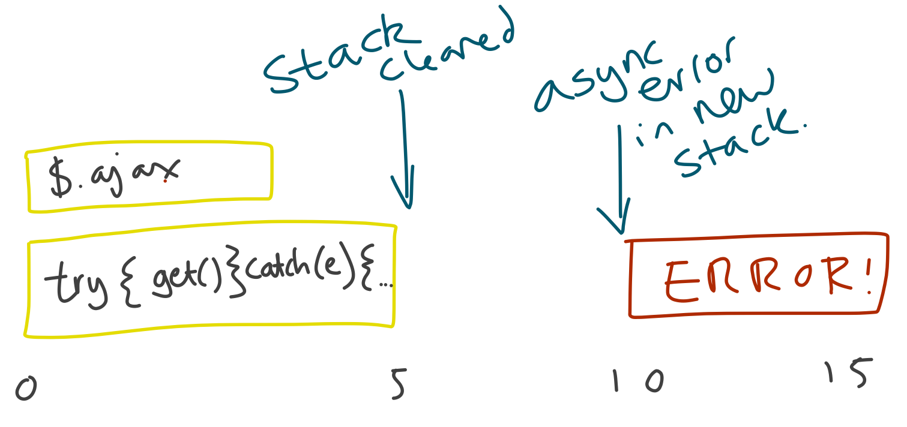
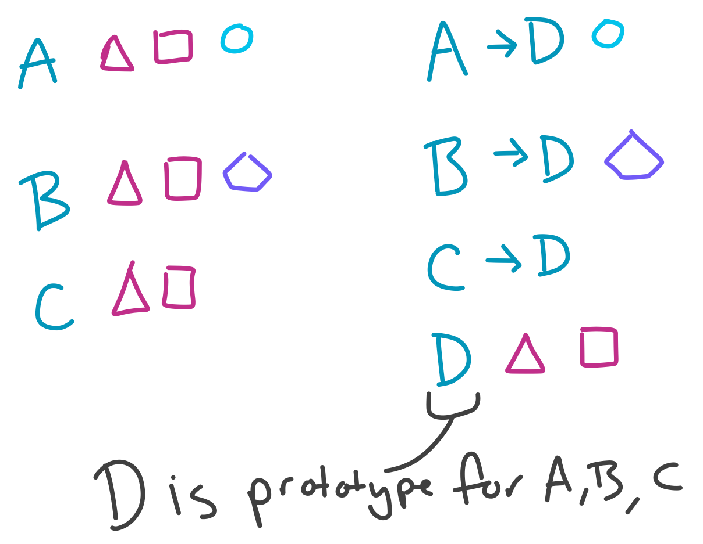
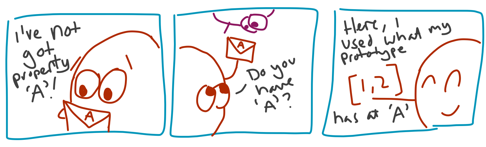
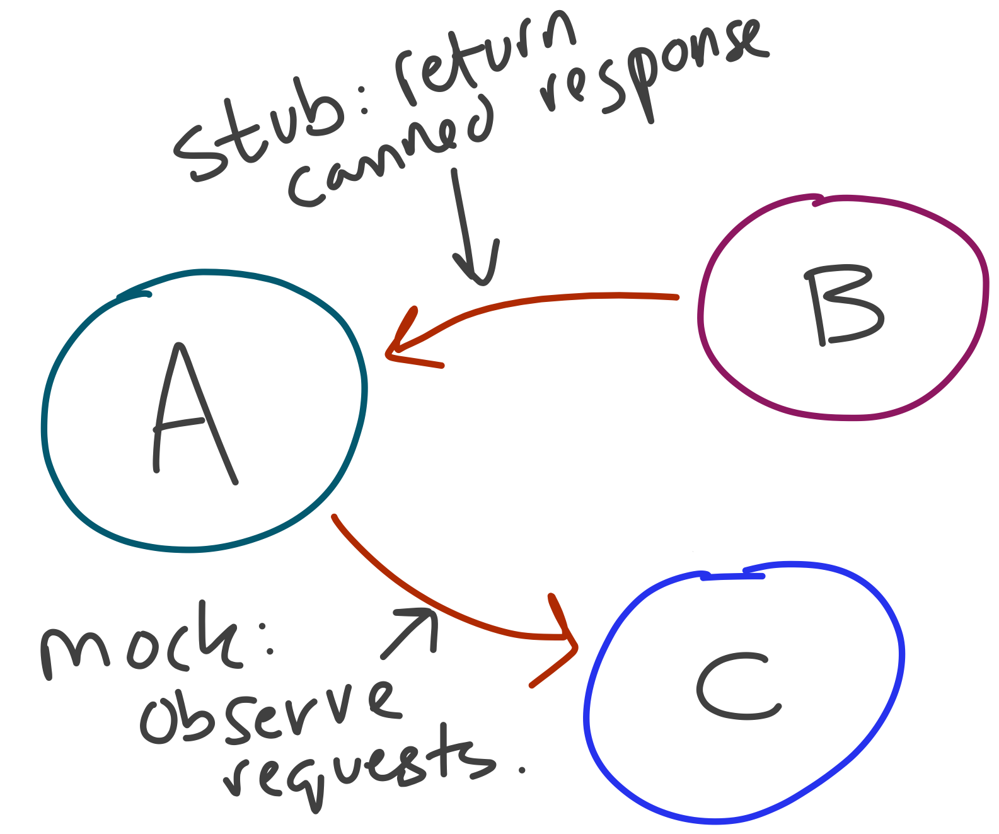

Advanced Javascript

Get setup
WiFi:
Today
Giving you strong core JS skills, ready to tackle modern JS codebases!
Platforms

Method
- Demo
- Exercise
- Review exercises at home!
Our guide
// most code examples can be directly pasted
// in browser console
console.log((0, "what does this do?"));
Ages of JS
ES3(obsolete)ES5 sloppy(avoid)- ES5 strict
- ES.next - ES2015 (ES6), +
Landscape diagram

Strict
// <- first non-comment line of file or function
"use strict";
// or: ES6 modules/classes
Tightens up language
- new to JS? Not missing anything!
- removes
with - bans duplicate properties
- implicit globals
Today: ES5 strict, & ES6
All code will run in strict, with ES6.
Exercise intro
./exercises/some-name
exercise.js
verify.js
cd ./exercises/some-name
node verify
Core
Aim
- Effective "programming in the small"
- Writing JS like a native
Designing in JS
Structuring an application
Make smaller things.
Sandii Metz
Lots of small bits
AKA modules!
Simplest
// greetings.en.js
export var informal = "hi";
// run.js
import { informal } from "./greetings.en";
console.log(informal + " amy") // hi amy
Default export
// greetings.es.js
export default "hola";
// greetings.es.js
var greeting = "hola";
export default greeting;
// greetings.es.js
var greeting = "hola";
export { greeting as default };
// run.js
import defaultSpanish from "./greetings.es";
console.log(defaultSpanish + " amy"); // prints 'hola amy'
Named exports, and renaming
var cake = "sponge";
var tea = "darjeeling";
export { tea, cake as treat };
Import default, and renaming
import { tea as drink, treat } from "./teaParty";
import { default as host } from "./teaParty";
// default + values
import party, { tea, treat } from "./teaParty";
Import as object
import * as party from "./teaParty";
var cake = party.cake;
export { party as default, cake as treat };
Don't worry
- just learn a few - you are only saving a couple of keystrokes
Let's have a go!
exercises/modules;
CommonJS
Node's module system
Very comparable syntax
Export
// export { mainMethod as default }
module.exports = exports = mainMethod;
// export function someFunction() {}
exports.someFunction = function() {}
function mainMethod() {
}
Import
// relative or absolute path
var myModule = require("./my/module");
Import
// what's this?
var aModule = require("./some/other/module");
// third party?
var fs = require("fs");
var readFile = fs.readFile;
// third party?
var someModule = require("lodash");
- how can we tell standard lib vs 3rd party?
Third-party code
// this is from core library
var fs = require("fs");
// this is looked up from node_modules folders in current,
// and parent directories
var anNpmModule = require("from-npm");
export
⭐️⭐️⭐️⭐️⭐️⭐️⭐️⭐️⭐️⭐️⭐️⭐️⭐️⭐️⭐️⭐️⭐️⭐️⭐️⭐️⭐️⭐️⭐️⭐️
⭐️ ⭐️
⭐️ 'Behind the scenes' ⭐️
⭐️ var module = { exports: {} }; ⭐️
⭐️ var exports = module.exports; ⭐️
⭐️ ⭐️
⭐️⭐️⭐️⭐️⭐️⭐️⭐️⭐️⭐️⭐️⭐️⭐️⭐️⭐️⭐️⭐️⭐️⭐️⭐️⭐️⭐️⭐️⭐️⭐️
exports.helper = function() {
}
module.exports = function Main() {
}
- What's wrong with the code above?
-
We've redefined
module.exports! -
Original
exportsobject is no longer in module object.
Let's have a go!
exercises/commonjs
Variables
Two ages
- Pre-ES.next:
var - Post:
let,const
var
var someVariable;
var anotherVariable = "hello";
undefined vs undeclared
undefiend
var notDefined;
console.log(notDefined); // ?
Undeclared
var someVar;
console.log(smeVar); // typo, what happens??
const
const doesNotChange = "hi";
// throws TypeError - Assignment to constant
doesNotChange = "I'll try my luck";
const
const counter = { count: 0 };
// what happens here?
counter.count += 1;
Rule: use const if possible
- one less source of bugs
- variables stand out
let
let hiThere = "hello";
if(true) {
let hiThere = "GOODBYE";
}
console.log(hiThere) // which?
Block scope
for(let i = 0; i++; i < 10) {
console.log(i);
}
// reference error
console.log(i);
Diagram of block scope

Rule: use let in loops etc
- one less source of bugs
- clearer where variables belong
What about var?
var = function scoped
Function scope
Diagram of function scope

One weird quirk
function main() {
// what happens here?
console.log(i);
for(var i = 0; i<10; i++) {
console.log(i);
}
}
Hoisting
function main() {
⚡️⚡️⚡️⚡️⚡️⚡️⚡️⚡️⚡️⚡️⚡️⚡️⚡️⚡️
# this is the 'hoisting zone', where
# all var statements are hoisted before invocation
SCOPE := { i: undefined }
# NOTE: JUST for intuition - lightning bolt sections
# are to give intuition for interpreter actions
⚡️⚡️⚡️⚡️⚡️⚡️⚡️⚡️⚡️⚡️⚡️⚡️⚡️⚡️
console.log(i);
for(var i = 0; i<10; i++) {
console.log(i);
}
}
Global scope
// browser - sloppy mode
something = "I am global";
// browser - strict mode
window.something = "I am global";
// node
global.something = "I am global";
Acessing global object
this; // sloppy, outside functions
window; // browser
global; // node
Exercise!
exercises/variables-and-scopes
Destructuring
Pulling variables from composite values
e.g
const [breakfast, lunch, ...more]
= ["eggs", "falafel", "high tea", "a feast!", "hot chocolate"];
console.log(breakfast) // "eggs"
console.log(more) // ["high tea", "a feast!", "hot chocolate"];
Structure
PATTERN DEFINING VARIABLES = VALUE TO DESTRUCTURE;
Objects
const guest = { name: "Hare", treat: "chocolate eggs" };
const { name, treat } = guest;
console.log(name) // Hare
Renaming
const guest = { name: "Hare", treat: "chocolate eggs" };
const { name: guestName, treat } = guest;
console.log(guestName) // Hare
Objects continued
const guest = { name: "Hare", treat: "chocolate eggs" };
let name, treat;
// syntax issue: can't have a naked {} on left hand
({ name, treat } = guest);
console.log(name, mood) // Hare, Jumpy
Failing
const notGuest = 1;
const { name, treat } = notGuest;
console.log(name, treat) // undefined, undefined
Defaults
const guest = { name: "Hare", treat: "chocolate eggs" };
const { name, treat, mood = "jumpy" } = guest;
console.log(name, mood) // Hare, Jumpy
const [ firstGuest = "cheshire cat" ] = [];
Recursive
const guest = {
name: "Hare",
treats: ["chocolate eggs", "toast", "rich tea biscuits"],
};
const { name, treats: [best, ...rest], mood = "jumpy" } = guest;
console.log(name, rest) // Hare, ["toast", "rich tea biscuits"]
Let's try
exercises/destructuring
Primitives
String
var name = 'Tim';
var description = "It's saving escapes";
var complete = `${name}: ${opinion}`;
Interpolation: ${}
var opinionOnEs6 = "much nicer";
var es6 = `Interpolation: '${opinion}'`;
var opinionOnEs5 = "looks ugly";
var es5 = "Interpolation: '" + opinion + "'";
Template strings
var es5Html = "<h1>Ugh</h1>" +
"<p>This is horrid</p>";
var howMuch = "Much";
var html = `
<h1>Writing HTML with ES.Next</h1>
<p>${howMuch} nicer</p>
`;
Boolean
var t = true;
Quiz: truthy vs falsy
var empty = Boolean(""); // true
Boolean("hello"); // ?
Boolean(0); // ?
Boolean(1); // ?
Boolean(7); // ?
Boolean(true); // ?
Quiz
var booly = new Boolean(false);
Boolean(booly);
Rule: never wrap primitives
// ARRRRRGGGHHHH!!!!!
var x = new String("");
var 1 = new Number("");
Rule: use Boolean
var x = "";
var coerced = Boolean(x);
// yes, you understand it, but does everyone?
var shortCoerce = !!x;
// NOOOOOOOOOO - never wrap primitives
var evil = new Boolean(false);
undefined and null
var x; // ?
var y = null;
null & undefined
- A nuisance since 1995.
- I'd stick to
undefined
Comparison
== has issues
Rule: always use ===
But ONE place to use ==
Handling null and undefined
var undefinedNotEqeqeqNull = undefined === null; // false
if(x === null || x === undefined) {
// what a chore!
}
if(x == null) {
// equivalent, shorter, nicer
}
Rule: use == null
var nullish = x == null;
===
- Same type?
Same value?
Special cases:
NaN !== NaN- Objects (non primitives): compares by identity, not value
==
- Objects (non primitives): compares by identity, not value
- Beyond that, very complex. Just use for
nullorundefined
Quality
Languages have gotchas
var launch = new Boolean(false);
if(launch)
console.log("launching missiles");
else
console.log("phew");
console.log("peace at last");
// what is output?
ESLint
- linter: clarifies code
- blunts some of JS's nasty gotchas
Try now
npm run lint:all
# per exercise
eslint exercises/some-exercise/exercise.js
Running ESLint
- Editor plugins
- CLI:
npm install --global eslint@latest
eslint path/to/js
Code style
// brevity at all cost!
yes && doThing()
if(yes) {
doThing();
}
Boring to debate!
JSCS
- find (& fix) style deviations
- makes switching code-bases more plesant
Try now
npm run style:all
# per exercise
npm install --global jscs@latest
jscs exercises/some-exercise/exercise.js
// boredom removal
jscs --fix exercises/some-exercise/exercise.js
Build tools
Modules
- still not native
Frontend build
- combine modules to single file
- minify to reduce size
- Source Maps to retain debuggability
Backend build
- simply transpile
Babel
- most popular, big community
- other options: Traceur, Closure
Transpiler
- converts from ES6 code to ES5
- plugin architecture: opt in
Fewest plugins as possible
- faster transpilation
- faster code!
function x([a,b]) {
return (...args) => args.map(x => x + a + b);
}
vs
"use strict";
var _slicedToArray = function () { /* 0.7kb of JS... */ }
function x(_ref) {
var _ref2 = _slicedToArray(_ref, 2);
var a = _ref2[0];
var b = _ref2[1];
return function () {
for (var _len = arguments.length, args = Array(_len),
_key = 0; _key < _len; _key++) {
args[_key] = arguments[_key];
}
return args.map(function (x) {
return x + a + b;
});
};
}
e.g
- Node 5 passes 56% of ES6 test suite, so:
> node -v
5.5.0
> npm install --save babel-preset-node5
Functions

Three ways to define
Declare
function add(a,b) {
return a + b;
}
Expression
var add = function(a, b) {
return a + b;
}
- (expression: something assignable)
Fat-arrow
// note: lack of `return`
var add = (a, b) => a + b;
// no ( ) for single arg
var id = object => object.id;
// note: multiple statements requires {} and `return`
var twoStep = (a, b) => { console.log(a); return b }
// returning just an object requires you provide brackets:
var object = (a, b) => {{a:1, b:2}}
- Is a fat-arrow an expression?
Evaluating functions
var result = add(add(10, 5), 5);
// steps for JS to evaluate right-hand-side:
// add(add(10, 5), 5);
// add(15, 5);
// 20
Default parameters
// default parameters
function log(n, base = 10, opts = {}) {
// ...
}
'Required' parameters trick
// default parameters
function log(n = required("number"), base = 10) {
// ...
}
function required(name) {
throw new Error(name + " is a required argument");
}
Named parameters via destructuring
function log({ n, base }) {
return Math.log(n) / Math.log(base);
}
log({ n: 64, base: 4 }) // 3
log({ n: 90, base: 10 }) // 1.954...
// team up with required!
function log({ n = required("n"), base = required("base") }) {
return Math.log(n) / Math.log(base);
}
function required(name) {
throw new Error(name + " is a required argument");
}
Named parameters defaults
function log({ n, base = 2 }) {
return Math.log(n) / Math.log(base);
}
console.log(log({ n: 8 })) // 3
log() // TypeError: Cannot match against 'undefined' or 'null'
// How to fix?
Complete named parameters
function log({ n, base = 2 } = {}) {
return Math.log(n) / Math.log(base);
}
console.log(log({ n: 8 })) // 3
log() // NaN
Variable length
// variable length functions
function sprintf(format, ...args) {
console.log(format, ...args);
}
const pair = [1,2];
// can use ... in calls too!
sprint("%s %s", ...pair);
Can do all this in ES5
But much uglier
arguments
function callMe() {
// who needs parameters?
console.log("Hello " + arguments[0]);
}
callMe("a");
Variable length
function describeRace(race, winner) {
console.log(race + " was won by " + winner + ", beating "
+ slice(arguments, 2).join(", "));
}
function slice(arrayLike, start, end) {
return [].slice.call(arrayLike, start, end);
}
callMe("a");
Exercise!
exercises/functions-core
Closures
Functions retain context
- functions retain variables visible where they're defined
In detail
- functions see var/let/const in surrounding function
- this link remains long after surrounding fn clears

Context
We can see variables in functions that wrap us (red)
Privacy
We can't see variables from inner functions (blue)
Coding interview spoiler
var elements = document.querySelectorAll("button");
// What is wrong here? How can we solve?
for(var i = 0; i < elements.length; i++) {
var element = elements[i];
element.addEventListener("click", function() {
console.log(element.innerHTML);
});
}
Exercise
exercise/closures
Ordered data-structures
Array
For ordered data
Ordered
const primeMinisters = ["Cameron", "Brown", "Blair", "Major"];
primeMinisters[0] // What would this be?
// ...and this?
primeMinisters[primeMinisters.length - 1]
// ...and this?
primeMinisters[-1]
console.log(primeMinisters.length) // 4
- Cameron - Array is 0 indexed
- Major
- undefined - negative indexes not defined
Extension
const primeMinisters = ["Cameron", "Brown", "Blair", "Major"];
primeMinisters.unshift("Fry"); // at start
primeMinisters.push("Thatcher"); // at end
// what did we learn about const?
console.log(primeMinisters.length) // 6
primeMinisters.pop(); // drops end
primeMinisters.shift(); // drops start
console.log(primeMinisters.length) // 4
Subsets
const primeMinisters = ["Cameron", "Brown", "Blair", "Major"];
const lastLabourGovernment = primeMinisters.slice(1, 3);
// Blair then Brown
lastLabourGovernment.reverse().join(" then ")
// how does slice() work?
Sorting
const primeMinisters = ["Cameron", "Brown", "Blair", "Major"];
primeMinisters.sort();
// [ 'Blair', 'Brown', 'Cameron', 'Major' ]
console.log(primeMinisters)
// what can we tell about .sort() and mutation?
// and sort order?
primeMinisters.sort((a,b) => a.length - b.length)
// [ 'Blair', 'Brown', 'Major', 'Cameron' ]
console.log(primeMinisters)
for ... in
const primeMinisters = ["Cameron", "Brown", "Blair", "Major"];
// what... is this allowed?
primeMinisters.metaData = "hi";
// for ... in will go over all properties of arrays
var initials = [];
for(let i in primeMinisters) {
initials.push( primeMinisters[i][0] );
}
// what does initials end up as?
- C, B, B, M, h. Why?
Arraycan have string properties!for .. initerates string properties
for
const primeMinisters = ["Cameron", "Brown", "Blair", "Major"];
const initials = [];
for(let i = 0, l = primeMinisters.length; i < l; i++) {
initials[i] = primeMinisters[i][0];
}
- likely always fastest
- but: ugly. Use only when forced to
- your time is much, much more valuable :)
for .. of
const primeMinisters = ["Cameron", "Brown", "Blair", "Major"];
primeMinisters.metaData = "hi";
// ES6 `for ... of` goes over VALUES of iterables
const initials = [];
for(let pm of primeMinisters) {
initials.push(pm[0]);
}
console.log(initials) // ["C","B","B","M"]
- What problem is solved?
Rule: avoid for ... in on arrays
Functional iteration
// ES5 'array additions'
const primeMinisters = ["Cameron", "Brown", "Blair", "Major"];
primeMinisters.filter((p) => p[0] === "B") // ["Brown","Blair"];
primeMinisters.map((p) => p[0]) // [ "C", "B", "B", "M" ]
primeMinisters.reduce((s, e) => s + ":" + e) // 'Cameron:Brown:Blair:Major'
Functional iterators
- intention revealing
- shorter, less error-prone
Remember: compares by identity
const byValue = [1,2] === [1,2]; // false
const couldStringify = JSON.stringify([1,2])
=== JSON.stringify([1,2]); // true
Exercise
exercises/arrays
Key-value data-structures
Object used as dictionary
const enToFr = {};
enToFr.hello = "bonjour";
enToFr.cheese = "fromage";
// equivalent
console.log(enToFr.hello);
console.log(enToFr["hello"]);
AKA hashmap, associative array, table.
Keys are strings, values = any
const dict = {};
dict[10] = "ten";
console.log(dict["10"]); // "ten"
// general rule: calls toString on non-strings
const convertsToTen = {
toString: () => "10"
};
console.log(dict[convertsToTen]); // "ten"
for ... in
for(const property in Object.values(object)) {
const value = object[property];
console.log(`${property}: ${value}`);
}
for ... of
// objects not iterable by default, so...
for(const [property, value] of entries(object)) {
console.log(`${property}: ${value}`);
}
// Object.entries(obj) is proposed for future ECMA
ES6 - dynamic keys
// ES6
function create(property, value) {
return { ["id:" + property]: value };
}
// ES5
function create(property, value) {
var o = {};
o["id:" + property] = value;
return o;
}
Missing features
const dict = {};
dict[1] = "hello";
// how to count?
console.log(dict.length); // undefined
console.log(Object.keys(dict).length); // slow for very large objects
ES6 to the rescue!
const m = new Map;
const o = {};
const a = [1,2];
const b = [1,2];
// assign
m.set(a, "A");
m.set(b, "B");
o = {[a]: "A", [b]: "B"}
console.log(Object.keys(o).length); // 1
console.log(m.size); // 2
// ...why?
More Map
const m = new Map;
const list = [1,2,3];
m.set(list, "A");
console.log(m.get(list)); // A
console.log(m.get([1,2,3])); // ...?
const m2 = new Map([
["list", "hello"],
["boo", "another key"],
]);
Maps: for .. of
const m = new Map;
m.set("A", 1);
m.set("B", 2);
for(let i in m) {
console.log(i) // not called! why?
}
for(let i of m) {
console.log(i) // ["A", 1], ...
}
for(let i of m.keys()) {
console.log(i) // "A", "B"
}
for(let i of m.values()) {
console.log(i) // 1, 2
}
m.forEach((v, k) => console.log(v, k))
Set
// ES6 only
const s = new Set;
s.add(1);
console.log(s.has(1)); // ...?
console.log(s.size); // ...?
s.add(1); s.add(1); s.add(1);
console.log(s.size); // ...?
const A = [1,2];
s.add(A);
console.log(s.has(A)); // ...?
console.log(s.has([1,2])); // ...?
Exercise
exercises/maps-objects-sets
Async
Async IO
- ubiquitious in JS
- the ecosystem default
- vs subset of libraries in Ruby EM, Python Twisted
Let's compare
Synchronous IO
- AKA 'blocking IO'
1 // we'll not continue to the next line until the OS
2 // has read the file and provided it back to our process
3 var contents = fs.readFileSync("/tmp/hello", "utf8");
4
5 console.log("End of source file");
Asynchronous IO
- AKA 'non-blocking IO'
1 fs.readFile("/tmp/hello", { encoding: "utf8" },
2 function(err, content) {
3 // (2/2) ...we get here
4 console.log("Read the file");
5 });
6
7 // (1/2) we'll get here waaaaaaaaaaaay before...
8 console.log("End of source file");
Clearing the stack
- no code ever runs simultaneously
- while code is running, no callbacks fire
Diagram loop

Rule: don't block the loop
- avoid long running, synchronous code
- chunk
- or delegate to other processes/WebWorkers
Diagram: starving the lop

Sources of async
setTimeout- AJAX
- IndexedDB, WebWorkers
- most Node APIs (
fs,child_process)
Stacks
- languages with functions need a stack
- keeps point to return to
- stack 'unravels' with errors
Stack diagram

With async, no one can hear you throw

e.g
// this stack is long gone...
try {
create({}, function() {
// ...
})
} catch(e) {
// never going to catch!
}
// waaaaay before...(1)
function create(data, cb) {
$post("/api/create", data, function(err, ok) {
if(err) {
// (1)...we get here
throw err;
}
})
}
Rule: don't throw in async
Let's try
exercises/callbacks-and-async
Promises
Intuition

An IOU
- A value, available immediately
- Settled - resolved or rejected - once
- Use before or after settled
Promises in practice
Steps in process
.then(transformResolve, transformReject)
const user = getUser(params["id"]);
const profile = user.then(getProfile);
const accountPage = Promise.all([user,profile])
.then(accountPageTemplate);
Present/use value
- finally used more like callback
accountPage.then(
renderHtml,
renderErrorMessage
);
then is
- Mostly: recipe for new values
- Sometimes: actions when resolved
Where?
- ES5: libraries
- ES6: built-in
- Libraries actually better
Promise tools
Creating resolved promise
Promise.resolve(x)
- returns a promise, if x is:
- a non-promise, a fulfilled promise for 'x'
- a promise, that promise
Creating rejected
Promise.reject(Error("some description"))
- returns a rejected promise
- should always reject with
Errorfor stacks
Groups of promises
Promise.all([promise, value, promiseB, valueB])
- returns promise for an array with all resolved
- works with all iterables (
Array,Mapetc)
Flow control
SomeQuery
.then(transform)
.then(function(value) {
if(!isOk(value)) {
return Promise.reject(Error("Not ok!"))
}
return someTest(value)) ?
QueryA(value) : QueryB(value);
})
.catch((err) => Promise.reject(Error("Query failed: " + err)))
.finally(function() {
// anything that happens if resolved/rejected
});
Rule: don't use promises as callbacks
- until you're doing something (display etc)
Promises + collections
var userIds = [10,20,30,50,100];
// array of promises
var users = userIds.map(User.get);
// promise for array of [user, account]
var usersWithAccounts = Promise.all(users)
.then(function(users) {
return users.map(function(user) {
return Promise.all([
user,
Account.get(user)
]);
});
});
Promises conclusion
- promises = values for async
- don't just use as callbacks
- think chains of transformations
Let's try
- exercises/promises
Generators
Why?
Custom iterators
- potentially infinite
- over your own data-structures
Asynchronicity
- very powerful for creating flow control
Iterators
// over arrays
for(const v of values) {
}
for(const [index, v] of values.entries()) {
}
// over maps
for(const [k,v] of map.entries()) {
}
Write your own!
function *objectProperties(object) {
const keys = Object.keys(object);
for(const key of keys) {
yield [key, object[key]];
}
}
for(const [k, v] of objectProperties({a: 1, b: 2, c: 3})) {
console.log(k, v);
}
Woah!
Baby steps: *
// the '*' means we're a generator function
function *objectProperties(object) {
// ...
}
Baby steps: yield
function *abc() {
// yield returns a value to the caller (for ... of above)
yield "a";
yield "b";
yield "c";
}
Two gotchas
Gotcha 1
logLast([1,2,3,4])
function *logLast(xs) {
console.log(xs[xs.length - 1]);
}
// what's output?
- Nothing
- Calling a generator function creates, not starts, a generator
- It's only via iterating it we can start it
Gotcha 1
- Generator functions return a generator
- The generator body is run only via iteration
Gotcha 2
for(const k in reverse([1,2,3,4])) {
console.log(k);
}
function *reverse(xs) {
for(var i = xs.length; i--;) {
yield xs[i];
}
}
- What's output?
- Nothing
- How are we looping over our generator?
Gotcha 2: Only for ... of, in will NOT work
Let's try!
Exercise 1
exercises/generators
Generator API
Generators are an interface
const gen = someGeneratorFunction();
console.log(typeof gen.next); // function
.next(passToYield)
- resume generator, passing
yieldthe value - returns next yielded value
e.g
function* echo() {
let value;
while(true) {
value = yield value;
}
}
const g = echo();
console.log(g.next("one")) // { done: false, value: undefined }
console.log(g.next("two")) // { done: false, value: "two" }
console.log(g.next("three")) // { done: false, value: "three" }
// why...?
Writing tools + DSLs
- since we control flow control inside our generators
- we... can write anything! :)
e.g digger
console.log(dig({ a: { b: "here" }}, ab)) // "here"
console.log(dig({ z: { b: "here" }}, ab)) // undefined
function *ab() {
yield "a";
yield "b";
}
function dig(object, create) {
const g = create();
while(object) {
let step = g.next();
if(step.done) {
break;
} else {
object = object[step.value];
}
}
return object;
}
Let's try!
Exercise 2
exercise/generators
Asynchronicity
Callbacks
function cat(pathA, pathB, cb) {
fs.readFile(pathA, function(err, fileA) {
if(err) return cb(err);
fs.readFile(pathB, function(err, fileB) {
if(err) return cb(err);
combine(fileA, fileB, cb);
});
})
}
Promises
function cat(pathA, pathB) {
return Promise.all([
fs.readFileAsync(pathA),
fs.readFileAsync(pathB),
]).then([fileA, fileB]) => {
return combine(fileA, fileB);
});
}
But... can we do better?
Yes!
import co from "co";
co(function *cat() {
const fileA = yield fs.readFileAsync(pathA);
const fileB = yield fs.readFileAsync(pathB);
return combine(fileA, fileB);
})
.then(function(combined) {
console.log(combined);
});
OMG!
What's going on?
Promise enabled
- when we
yielda promise, co will call.nextafter the promise resolves
Writing methods
import co from "co";
const cat = co.wrap(function *cat(pathA, pathB) {
const readingA = fs.readFileAsync(pathA);
yield fs.readFileAsync(pathB);
const fileA = yield readingA;
return combine(fileA, fileB);
});
// files contain upper case words
cat("./one", "./two")
.then(function(combined) {
// ONETWO
console.log(combined);
});
Parallel
import co from "co";
co(function *cat() {
// don't yield yet...
const readingA = fs.readFileAsync(pathA);
// ...until we've started the other tasks
// to run in parallel
const fileB = yield fs.readFileAsync(pathB);
const fileA = yield readingA;
return combine(fileA, fileB);
})
Let's try!
Exercise 3
exercise/generators
Objects
Confusion
Object
const a = { b: 1 }; // this is an instance of 'Object'
// A is an object too!
A.b = 1;
function A() {
}
console.log(typeof null); // object
Nope
OOP
- Object-oriented programming.
- Alan Kay's 'objects'
The big idea is "messaging".
OOP in JS
- ES6:
class - ES5: prototypes
ES6
class Widget {
constructor({ model }) {
this._model = model;
}
render() {
return `<div>${ this._model.get("name") }</div>`;
}
}
const instance = new Widget({
model: new Map([["name", "crockford"]]),
});
Let's break it down
class Widget {
// this is the function invoked when we call 'new Widget'
constructor({ model }) {
// ...
}
}
Let's break it down
class Widget {
// ...
// methods defined here will be callable on the instances
render() {
}
}
Let's have a go
Exercise 1
exericses/objects-and-prototypes
Okay that's the basics
What about
Privacy?
Consensual privacy
class Widget {
render() {
return `<div>${ this._renderName() }</div>`;
}
// prefix to show it's private
_renderHelper() {
return `<span class='name'>
${ this._model.get("name") }
</span>`;
}
}
const instance = new Widget(/* ... */);
instance.render();
instance._renderHelper(); // no error
Stricter privacy
const privates = new WeakMap;
class Counter {
constructor() {
privates.set(this, { count: 0 })
}
get() {
return privates.get(this).count;
}
add() {
privates.get(this).count += 1;
}
}
const instance = new Counter(/* ... */);
instance.add();
instance.add();
console.log(instance.get()); // 2
WeakMap?
- keys are available to garbage collect (GC)
- if only weak references remain, available for GC
- keys must be non-primitives
WeakMap e.g
const map = new Map;
const weak = new WeakMap;
const A = {};
const B = {};
const C = {};
map.set(A, "");
weak.set(B, "");
weak.set(B, "");
weak.set(C, "");
global.map = map;
global.weak = weak;
Inheritence
class DefaultMap extends Map {
constructor(members, defaulter) {
super(members);
this._default = defaulter;
}
get(key) {
if(!this.has(key)) {
this._default(key, this);
}
return super.get(key);
}
}
const instance = new DefaultMap([["apples", 7 ]]),
() => 0)
console.log(instance.get("apples")) // 7
console.log(instance.get("pears")) // 0
Broken down
class DefaultMap extends Map {
constructor(members, default) {
super(members);
this._default = default;
}
// ...
}
// this is the default constructor of a sub-class
constructor(...args) {
super(...args)
}
Calling super methods
class DefaultMap extends Map {
// ...
get(key) {
// ...
return super.get(key);
}
}
Let's try
Exercise 2
exercises/objects-and-prototypes
Properties?
class Widget {
something: [];
}
Nope
Deliberate ommission
Instead
class Point {
constructor(x, y) {
this.x = x;
this.y = y;
}
}
Why?
Well...
How do JS objects really work?
Prototypes!
Big idea
If an object doesn't know, it asks its prototype

Chain

Lookup algorithm
// always at run-time
function getProperty(object, prop) {
if(object.hasOwnProperty(prop)) {
return object[prop];
} else {
if(object.__proto__) {
getProperty(object.__proto__, prop);
} else {
return undefined;
}
}
}
So... properties
class Widget {
}
// I'm bored of initialising in constructor!
Widget.prototype.letters = [];
const A = new Widget;
const B = new Widget;
A.letters.push("a");
console.log(B.letters) // ["a"]
- What went wrong?
- All instances share same prototype property!
Creating objects with prototype
const sturcture = {
squareArea: function() {
return this.width * this.height;
},
};
const house = Object.create(structure);
Object.assign(house, {
width: 5,
height: 10,
});
const shed = Object.create(structure);
Object.assign(shed, {
width: 2,
height: 2,
});
house.squareArea() // 50
shed.squareArea() // 4
this on invocation
const sturcture = {
squareArea: function() {
return this.width * this.height;
},
};
const house = Object.create(structure);
Object.assign(house, {
width: 5,
height: 10,
});
house.squareArea() // 50
Magic argument this
// this = someObject
someObject.someProperty();
const someProperty = this.someObject;
// this = enclosing this, likely global
someProperty();
Classic bug
var someObject = {
name: "lil' listeny",
listen: function(el) {
el.addEventListener("click", this.handle)
},
handle: function() {
console.log(this.name);
},
};
// what do we see console.log'd?
someObject.listen(button);
button.click();
How can we fix?
=>
var someObject = {
// ...
listen: function(el) {
// fat arrow has lexical this! i.e this of current scope
el.addEventListener("click", (e) => this.handle(e))
},
// ...
};
fn.bind(thisValue)
var someObject = {
// ...
listen: function(el) {
// .bind returns a new fn, as if bound to this via closure
el.addEventListener("click", this.handle.bind(this))
},
// ...
};
Writing bind
function bind(fn, thisValue) {
return function() {
return fn.apply(thisValue, arguments);
}
}
Via new
function Structure(width, height) {
this.width = width;
this.height = height;
}
Structure.prototype = {
squareArea: function() {
return this.width * this.height;
},
};
function House(w, h, bedrooms) {
Structure.call(this, w, h);
this.bedrooms = bedrooms;
}
House.prototype = new Structure;
House.prototype.sleeps = function() {
return this.bedrooms.reduce((s,b) => s + b.sleeps, 0)
};
.call(thisValue, ...args)
function House(w, h, bedrooms) {
Structure.call(this, w, h);
this.bedrooms = bedrooms;
}
function Structure(width, height) {
// our 'this' value when we call Structure.call above
// will be an object { proto: House.prototype }
this.width = width;
}
Let's try!
Exercise 3
exercises/objects-and-prototypes
Iterating custom data structures
We can for .. of Maps etc
What about our own data-structures?
Yes we can!
for(const [value, left, right] of myTree) {
// pretty cooooool....
}
OMG!
How?
An API
We need to be safe here...
Avoid name clashes with any existing code
How?
Symbols
Symbols = opaque, unique 'ID'
const s1 = Symbol("A");
const s2 = Symbol("B");
const s3 = Symbol("B");
console.log(s2 === s3) // ?
- Are s2 and s3 the same?
- Why not?
Prevents clashes
- e.g two libraries extend built-in Objects with methods
// like unix 'tac' method
Object.defineProperty(String.prototype, "tac", {
value: function(...others) {
return others.slice().reverse().join("") + this;
}
});
console.log("hello".tac("1","2","3")) // 321hello
With symbols
const tacOne = Symbol("tac");
const tacTwo = Symbol("tac");
Object.defineProperty(String.prototype, tacOne, {
value: function(...others) {
return others.slice().reverse().join("") + this;
}
});
Object.defineProperty(String.prototype, tacTwo, {
value: () => { throw Error("BROOOOKEN") }
});
console.log("hello"tacOne) // 321hello
Used a lot in new language features
- no risk of breaking old code via clashes
Letting YOU define object iterators
e.g a nice simple linked list
function L(value, next) {
return { value, next };
}
const list = L(1, L(2, L(3)));
const items = [];
for(let node = list; node; node = node.next) {
items.push(node.value);
}
console.log(items); // [1, 2, 3]
e.g a nice simple linked list
// this is a bit faffy, and fragile
const items = [];
for(let node = list; node; node = node.next) {
items.push(node.value);
}
With custom iterators!
const items = [];
// WOAH!!!
for(const value of list) {
items.push(node.value);
}
- implementation detail hidden (
.next,.value) - generic -
listcould be replaced withArray,Set - no boilerplate
Language hook
- shared symbols are hooks for the newer features of ECMAScript
{
*Symbol.iterator {
// yields each value in data-structure in turn
}
}
Defining
function L(value, next) {
return { value, next,
[Symbol.iterator]: iterateLinkedList };
}
function *iterateLinkedList() {
for(let node = list; node; node = node.next) {
yield node.value;
}
}
const list = L(1, L(2, L("banana")));
for(const v of list) console.log(v);
Your turn
Exercise 4
exercises/generators
Tests
Writing good software takes time
JS is loose
Tests + dynamic: great mix
How do we test?
How do we test?
How do we specify behaviour?
Documentation comes free!
1. Describe the context
describe("user login", function() {
})
2. State what it should do
describe("user login", function() {
it("starts off with username field focussed");
it("warns if the password is too simple");
it("prevents sumission if invalid");
})
3. Implement assertions to ensure behaviour
describe("user login", function() {
it("starts off with username field focussed", function() {
const widget = new Widget();
widget.render();
const input = widget.el.find("[name=username");
assert.elementHasFocus(input);
});
})
4. When tests fail, you write code
class Widget {
render() {
// implement
}
}
5. Or, new, lower-level tests
// our higher level test may prompt this:
// it("starts off with username field focussed");
describe("auto-focus component", function() {
it("focusses an input");
it("does not prevent focus leaving the input");
})
Also: tests are code
Keep it dry
describe("auto-focus component", function() {
let widget;
beforeEach(function() {
// put our shared setup in here, save typing
widget = new Widget();
});
})
TDD loop
- fail/red: a failing test
- code code code!
- pass/green: our code passes test
- (refactor/performance): with confidence
Let's try
Exercise 1
exercises/testing
Hard tests
e.g
- asynchronous
- random
- Date/time dependent
Aside: async
// callback based - mocha supports promises too
it("should call", function(done) {
somethingAsync(function(url) {
assert.match(url, /users\/1/)
done();
})
})
Isolate
until it's 'too easy'
Mocks n stubs
Both fakes
Roll your own, or library
- sinon
Mocks: function voyeurism
it("should call", function(done) {
// Faking out $.get
$.get = function(url) {
assert.match(url, /users\/1/)
done();
}
user.retrieve(1);
})
Mocks: asserting call behaviour
Stubs
- replace dependencies of a unit
function computeAnswer(cb) {
$.get("/answer",function(answer) {
cb(answer + 1);
});
}
// STUB!
$.get = function(url, cb) {
cb(42);
}
computeAnswer(function(answer) {
assert.equals(result,43);
});
Mocks are tests, stubs support tests
Diagram of mocks/stubs

Let's try
Exercise 2
exercises/testing
Developer Tools
Chrome
- CPU
- memory
- timeline
Node.js
- can be used here too, with caveats
node-debugger
Hands-on
in Chrome, google and open 'ember TodoMVC'
Wrap!
Thanks!
For tips & content, sign up to my mailing list: